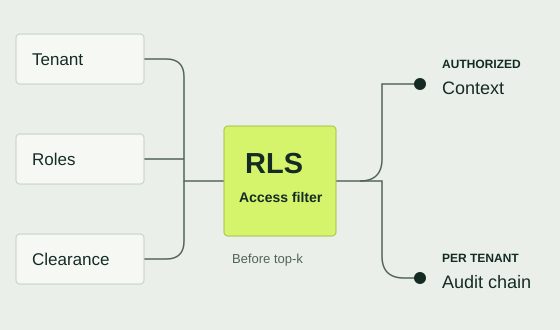
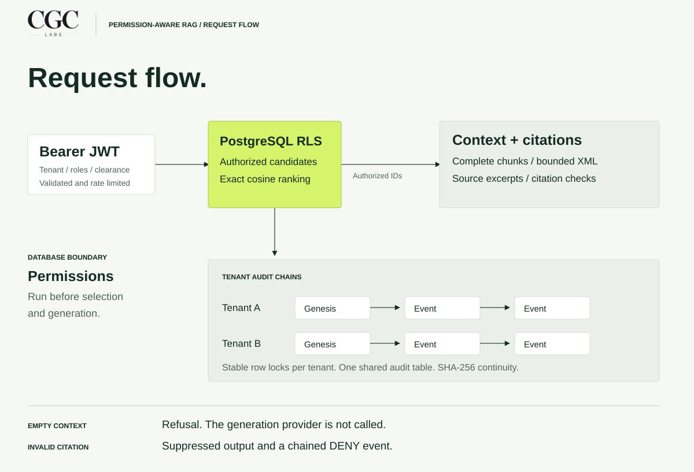
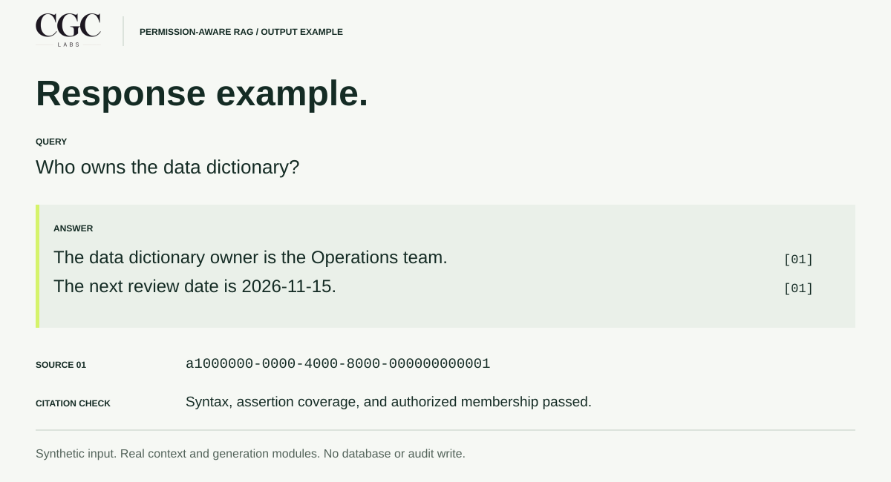
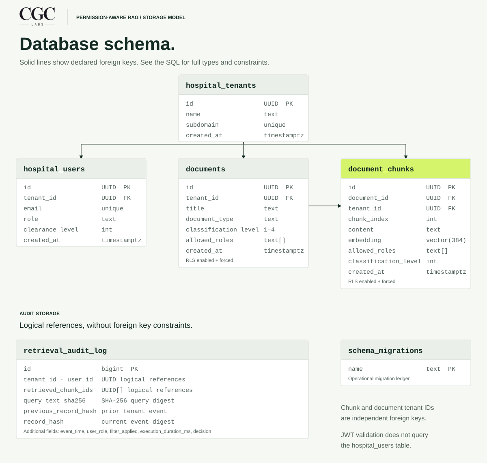

Permission-
aware RAG
A retrieval service that applies database permissions before selecting the records an answer can use.
Python / FastAPI / PostgreSQL / pgvector
Synthetic hospital records. Deterministic generation.

Recorded test run
PostgreSQL 18.4 · pgvector 0.8.7
tests passed in the recorded run
adversarial security vectors
simultaneous audited requests
Permissions before ranking.
A close vector match can still belong to another tenant or exceed a user's clearance. This service applies permissions in PostgreSQL before ranking authorized records.

Authorization
Tenant, roles, and clearance bind to transaction-local settings. Retrieval rejects superuser and BYPASSRLS connections.
Tenant audit chains
Stable tenant-row locks serialize writes within a tenant. Separate tenants maintain independent SHA-256 continuity.
Bounded context
The assembler includes complete chunks within a conservative byte budget. It quarantines known injection signatures and escapes XML boundaries.
Citation checks
The verifier checks syntax, assertion coverage, and authorized source membership. Empty usable context bypasses generation. These checks do not establish clinical accuracy.
Generated output.
The offline example runs the real context assembler and generator against a short operations note. Full UUID citations remain in the JSON response.

Run the offline example.
python -m examples.generate_response
python -m examples.generate_response --jsonStorage boundaries.
Documents and chunks carry their own tenant and access metadata. Four declared foreign keys describe ownership; audit references remain independent.

Verification record.
The recorded run passed 106 tests on PostgreSQL 18.4 with pgvector 0.8.7. The concurrency test committed exactly 20 audit events and verified both tenant chains.
Additional regressions check that a locked tenant does not block another tenant and that invalid citations produce a chained DENY event.
- Database
- PostgreSQL 18.4
- Vector extension
- pgvector 0.8.7
- Records
- Synthetic hospital data
- Generation
- Deterministic provider
This is an independent engineering demonstration using synthetic data. PostgreSQL 16 compatibility and latency targets remain unverified. The test results do not establish clinical safety or healthcare compliance.